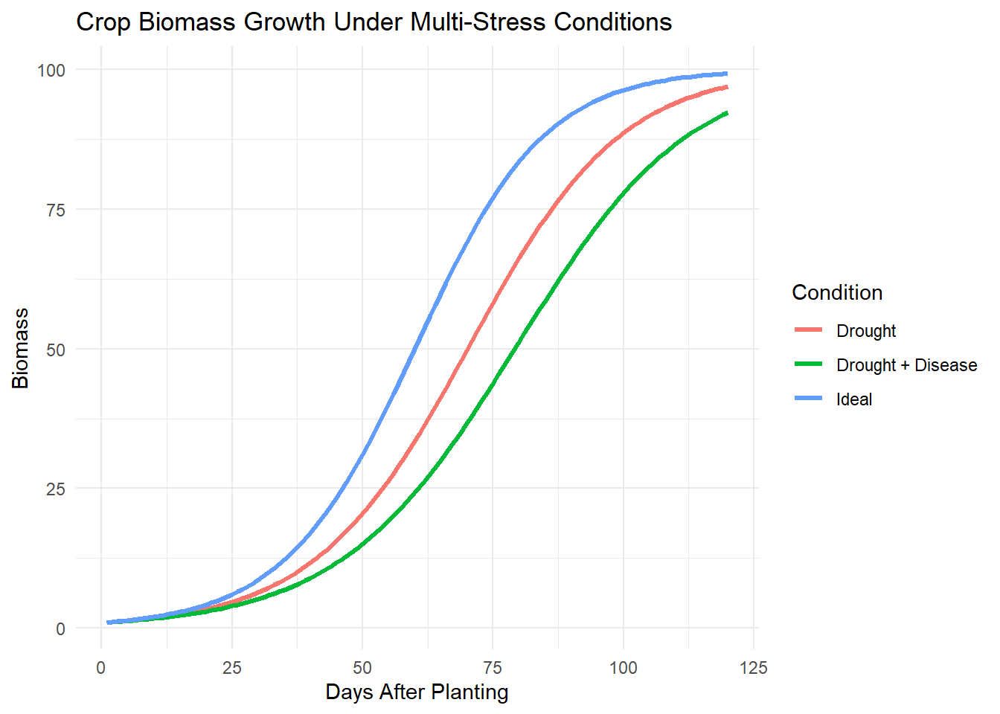

library(ggplot2)
library(dplyr)
library(tidyr)Multi-Stress Crop Growth Simulation
Introduction
Crop production systems are often exposed to multiple interacting stresses including drought, nutrient limitation, and biological threats such as pathogens and herbivores. Understanding how these stresses interact to affect crop growth is critical for improving predictive models of agricultural systems.
This project explores a simplified process-based simulation of crop biomass accumulation under three scenarios:
- Ideal growing conditions
- Drought stress
- Combined drought and disease stress
The objective is to illustrate how interacting stresses alter crop growth trajectories.
Methods
A logistic growth model was used to simulate crop biomass accumulation over a 120-day growing season.
The model follows the form:
\[ B_{t+1} = B_t + rB_t(1 - B_t/K) \]
where:
- (B_t) = biomass at time t
- (r) = intrinsic growth rate
- (K) = carrying capacity
Stress factors reduce the effective growth rate:
- Drought: 15% reduction
- Drought + disease: 25% reduction
Load Libraries
Load Dataset
growth_data <- read.csv("../data/multi_stress_crop_growth.csv")
head(growth_data) Day Biomass_Ideal Biomass_Drought Biomass_DroughtDisease
1 1 1.000000 1.000000 1.000000
2 2 1.079200 1.067320 1.059400
3 3 1.164604 1.139123 1.122291
4 4 1.256688 1.215701 1.188872
5 5 1.355959 1.297364 1.259357
6 6 1.462965 1.384440 1.333966Data Preparation
Convert the dataset to long format for visualization.
growth_long <- growth_data |>
pivot_longer(
cols = c(Biomass_Ideal, Biomass_Drought, Biomass_DroughtDisease),
names_to = "Condition",
values_to = "Biomass"
)Rename conditions for readability.
growth_long$Condition <- recode(
growth_long$Condition,
Biomass_Ideal = "Ideal",
Biomass_Drought = "Drought",
Biomass_DroughtDisease = "Drought + Disease"
)Results
Biomass Growth Curves
ggplot(growth_long, aes(x = Day, y = Biomass, color = Condition)) +
geom_line(linewidth = 1.2) +
labs(
title = "Crop Biomass Growth Under Multi-Stress Conditions",
x = "Days After Planting",
y = "Biomass",
color = "Condition"
) +
theme_minimal()
The results show that biomass accumulation is highest under ideal conditions and declines progressively under drought and combined stress scenarios.
Summary Statistics
growth_long |>
group_by(Condition) |>
summarise(
Final_Biomass = max(Biomass),
Mean_Biomass = mean(Biomass)
)# A tibble: 3 × 3
Condition Final_Biomass Mean_Biomass
<chr> <dbl> <dbl>
1 Drought 97.0 42.4
2 Drought + Disease 92.3 35.6
3 Ideal 99.3 50.6The combined drought and disease scenario produces the lowest final biomass, demonstrating the compounding impact of interacting stresses.
Discussion
The simulation highlights how relatively small reductions in growth rate can substantially affect final biomass accumulation. When drought stress is combined with disease pressure, crop productivity declines more strongly than under drought alone.
Although simplified, this modelling approach illustrates how process-based models can be used to explore the dynamics of agroecosystem stress interactions.
Such models are foundational tools in crop modelling frameworks used to predict agricultural performance under variable environmental conditions.
Conclusion
This project demonstrates a reproducible workflow for simulating crop growth dynamics and analyzing stress impacts using R.
Key outcomes include:
Implementation of a simplified process-based crop growth model
Simulation of interacting stress effects
Visualization of biomass trajectories under different conditions
Reproducible reporting using QuartoThe workflow illustrates foundational computational skills relevant to crop modelling and agroecosystem research.